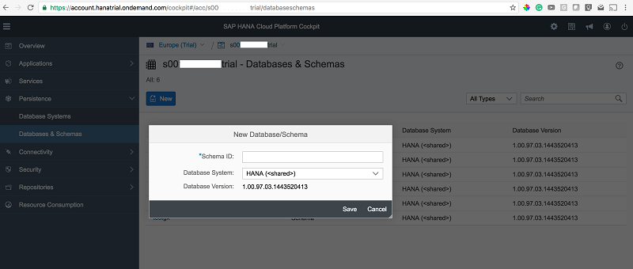
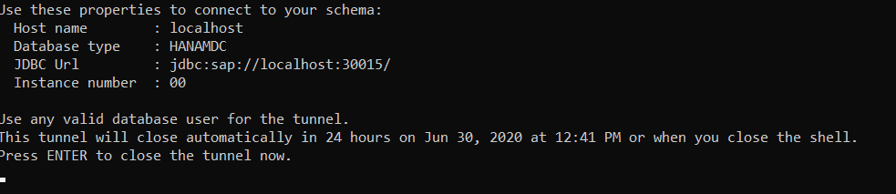
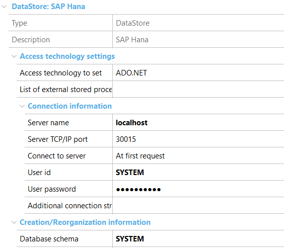

A way to build applications that use SAP HANA database is to do it through the Cloud platform available from SAP, called SAP Cloud Platform. For trial purposes, a free account may be created at hcp.sap.com. From there, it is possible to create a new schema within a shared instance of the SAP HANA database offered to free accounts. In order to create a new schema, go to the option “Databases & Schemas” in the SAP Cloud Platform Cockpit. Read further details at view SAP HANA documents  To connect to this schema through JDBC, a “tunnel” must be established. This is done with the following command (using the SAP HCP SDK): neo open-db-tunnel -a <account> -h <host> -u <user> -p <password> -i <schema> Where:
Details about this command are available here The SDK may be downloaded from https://tools.hana.ondemand.com/#cloud. It is the one that corresponds to Java Web Tomcat 7. It is also necessary to copy the JDBC driver to the driver directory, inside the Environment directory. The file that must be copied is the ngdbc.jar file that may be obtained as indicated in the manual http://help.sap.com/hana/SAP_HANA_Client_Installation_Update_Guide_en.pdf Upon opening the tunnel, we get the following information containing the schema, as well as the user and password to be used later for the data store set-up in GeneXus.  In the data store for SAP HANA in GeneXus, we will have to use that information as follows:
 If we want to prototype while working connected to this schema in the SAP HANA database, we must open the tunnel with this command and copy the password value again, because it will be changed every time that the tunnel is opened.
|
| Backlinks |
| How to deploy an application to SAP Cloud Platform |